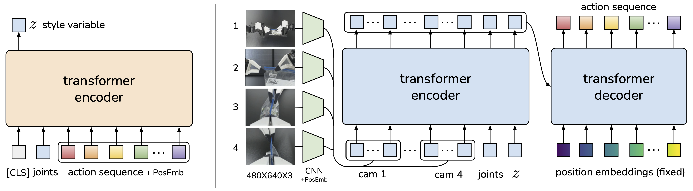

도전 과제: 두 팔이 공을 건네 색상별로 분류하기
1종목의 미션은 **“한쪽 팔로 공을 집어 반대쪽 팔의 그리퍼로 전달한 뒤, 색상별로 수납함에 정확히 분류”**하는 것이었습니다. 한 번의 시연 안에 다음 세 동작을 끊김 없이 수행해야 했습니다.

왜 ACT를 선택했는가
여러 모방학습 모델 가운데 ACT(Action Chunking with Transformers)를 선택했습니다. ACT는 스탠퍼드의 Tony Zhao와 Chelsea Finn을 중심으로 UC Berkeley의 Sergey Levine, Meta의 Vikash Kumar가 함께 발표한 2023년 논문 Learning Fine-Grained Bimanual Manipulation with Low-Cost Hardware에서 제안된 모델입니다. 저비용 양팔 로봇 ALOHA와 함께 개발됐으며, 사람이 텔레오퍼레이션으로 보여준 정밀 조작을 적은 시연으로 학습하는 데 초점을 둡니다.
해커톤처럼 데이터 수집과 학습 시간이 제한된 상황에서, ACT는 비교적 적은 시연으로도 접촉이 많은 세분화 조작을 빠르게 학습시키기 좋은 출발점이었습니다. 특히 한 스텝씩 행동을 예측하는 대신 여러 미래 행동을 묶어 출력해 긴 작업의 유효 길이를 줄이고, 앞 동작의 작은 오차가 뒤로 계속 누적되는 문제를 완화한다는 점이 양팔 전달 미션에 적합하다고 판단했습니다.
ACT는 각 시점의 카메라 영상과 로봇 관절 상태를 입력받아 다음 한 동작만 예측하지 않고, 앞으로 실행할 연속 행동을 하나의 action chunk로 출력합니다. ResNet-18이 여러 카메라의 시각 특징을 추출하고 Transformer가 이 특징과 양팔의 관절 상태를 결합해 두 팔의 관절·그리퍼 명령을 함께 생성합니다. 짧은 단위의 행동을 묶어 예측하므로 공을 집고, 건네고, 놓는 연속 동작을 더 매끄럽게 모방할 수 있다고 판단했습니다.
아래 구조의 왼쪽은 학습 단계입니다. 현재 관절 상태와 사람이 수행한 정답 행동 시퀀스를 Transformer Encoder에 넣어 시연의 동작 특성을 나타내는 잠재 변수 z를 학습합니다. 오른쪽의 실제 정책은 여러 카메라 영상을 CNN으로 처리한 시각 특징, 현재 관절 상태와 z를 결합하고, Transformer Encoder·Decoder를 거쳐 앞으로 실행할 행동 시퀀스를 한 번에 예측합니다. 학습에 사용되는 왼쪽 CVAE Encoder는 추론 시 제거되며, 실행 단계에서는 현재 관측으로부터 행동 chunk를 반복 생성합니다.

Robot State
Visual Features
Action Chunk
Joint · Gripper
Sort

1차 시도: 다섯 개의 공을 한 번에 학습시키기
처음에는 실제 심사 순서와 동일하게 파란 공 2개, 빨간 공 2개, 노란 공 1개를 연속으로 집어 전달하고 분류하는 전체 과정을 하나의 에피소드로 기록했습니다. 이 방식으로 약 100개의 시연 데이터를 수집해 첫 학습을 진행했습니다.
그러나 1차 테스트에서는 로봇이 동작 중 갑자기 멈추거나, 공과 그리퍼의 위치가 조금만 달라져도 집기 정확도가 크게 떨어졌습니다. 하나의 긴 에피소드 안에 공의 위치, 색상, 순서와 양팔 전달 단계가 모두 섞이면서 각 단계에 필요한 시연 밀도가 부족했고, 앞 단계의 작은 오차가 뒤 동작까지 누적됐습니다.
- 데이터
- 파랑 → 파랑 → 빨강 → 빨강 → 노랑의 다섯 공 전체 과정을 약 100개 에피소드로 기록
- 학습 단위
- 집기·전달·색상 분류를 하나의 긴 행동 시퀀스로 모방
- 관찰 결과
- 중간 정지와 불안정한 집기가 발생하고, 공 위치 변화에 대한 정확도가 기대에 미치지 못함
- 판단
- 긴 시퀀스를 반복하기보다 공 하나를 집어 해당 수납함에 넣는 단일 태스크의 품질을 먼저 높여야 함
2차 시도: 태스크를 나누고 실패까지 데이터로 만들기
추가 기술 조사를 거쳐 다섯 공을 한 번에 학습시키는 대신, 공 하나를 집어 색상에 맞는 수납함에 넣는 태스크로 시연을 나눴습니다. 색상별 단일 태스크를 반복하면 모델이 한 번의 성공 동작을 더 조밀하게 관찰할 수 있고, 긴 시퀀스에서 발생하던 오차 누적도 줄일 수 있다고 판단했습니다.
또한 사용한 카메라는 2D 영상만 제공하므로, 화면 속 위치가 같아 보여도 실제 깊이와 크기 차이로 스케일 왜곡이 생길 수밖에 없었습니다. 정면으로만 접근하는 동일한 궤적 대신 그리퍼가 공을 대각선 방향으로 진입하도록 시연 각도를 다양화해 위치 오차에 대한 대응 범위를 넓혔습니다.
성공 궤적만 기록하지도 않았습니다. 텔레오퍼레이션 중 일부러 공을 놓친 뒤 다시 접근해 집는 복구 동작을 추가했습니다. 실제 추론에서 공이 미끄러지거나 예상 위치를 벗어나더라도 다음 행동으로 이어갈 수 있도록 실패 이후의 상태와 복구 과정을 데이터에 포함했습니다.
심사 결과: 5개 중 3개 성공
최종적으로 약 200개의 시연 데이터를 확보했습니다. 마감이 오전 9시였기 때문에 학습을 더 이어가지 못하고, 당시 15,000 step까지 학습된 체크포인트로 심사를 진행했습니다.
로봇은 다섯 개의 공 가운데 세 개를 집어 전달하고 색상별 수납함에 넣는 데 성공했습니다. 네 번째 공을 처리하는 과정에서 오른팔이 수납함을 넘어뜨렸고, 환경이 흐트러져 남은 시연은 더 이상 진행할 수 없었습니다. 완주에는 실패했지만, 데이터 전략을 바꾼 뒤 실제 심사 환경에서 세 번의 연속 성공을 확인했습니다.

심사에서 세 개의 공을 연속으로 전달·분류한 뒤 네 번째 동작 중 수납함이 넘어져 종료했습니다.
전체 연속 시퀀스 중심의 1차 데이터에서 단일 태스크와 실패 복구를 포함한 데이터로 개선했습니다.
마감 시각까지 학습된 모델로 심사했으며, 저장소에는 이후 50K 설정의 공개 ACT 체크포인트도 연결돼 있습니다.
회고: 모방을 넘어 판단할 수 있는 구조가 필요했다
ACT는 짧은 시간 안에 정밀한 양팔 동작을 학습시키는 데 효과적이었지만, 이번 미션에서는 모방학습만으로 해결하기 어려운 한계도 확인했습니다. 정책은 카메라 영상과 현재 관절 상태로 다음 행동을 생성하지만, “현재 몇 번째 공인지”, “어느 색을 다음에 처리해야 하는지”, “수납함이 넘어졌는지”와 같은 명시적인 작업 상태나 목표를 스스로 결정하는 구조는 아니었습니다. 따라서 정해진 순서를 데이터에서 암묵적으로 모방할 뿐, 상황에 따라 다음 행동을 결정론적으로 선택하거나 작업 계획을 다시 세우는 데는 취약했습니다.
다시 설계한다면 ACT를 저수준 양팔 조작 정책으로 사용하되, 색상 인식과 공 개수·작업 진행 상태를 관리하는 상위 상태 머신을 분리하겠습니다. 여기에 수납함 전도나 집기 실패를 감지하는 조건을 추가해, 필요한 단일 태스크 정책을 선택하고 실패 시 복구 동작으로 전환하도록 구성할 수 있습니다. 이번 경험을 통해 모델 선택만큼이나 태스크를 어떻게 나누고, 실패 상태까지 어떤 데이터로 보여주는가가 실제 로봇의 강건성을 좌우한다는 점을 배웠습니다.
함께한 팀